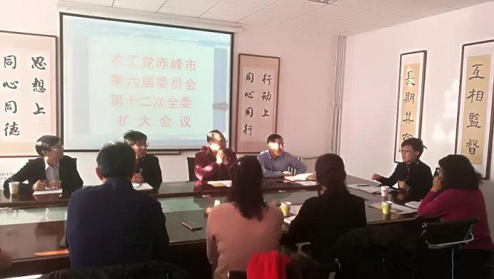

12月16日，农工党赤峰市委召开第十二次全委扩大会议，会议由农工党赤峰市委主委、市政府副市长李艳茹主持，农工党赤峰市委委员及党员骨干出席会议。
会议传达了农工党区委《关于进一步推进“三学一讲”专题活动的通知》《关于开展庆祝改革开放40周年宣传活动的通知》《关于征集2019年自治区政协十二届二次会议提案的通知》等文件，并按照通知要求对相关工作进行了安排部署。讨论通过了《农工党赤峰市委员会民主生活会制度》，研究确定了2018年末党员大会的形式内容和表彰先进支部及个人相关事宜。
李艳茹对农工党赤峰市委2018年工作取得的成绩予以充分肯定，她指出，2018年，农工党赤峰市委各部门和基层组织深入学习领会习近平新时代中国特色社会主义思想，努力提升履职尽责能力水平，团结一致，扎实工作，奋力拼搏，在推进基层组织建设、履行参政党职能、致力脱贫攻坚和社会服务等方面都取得了一定的成绩。强调，全体党员要再接再厉，认真做好年终总结、年度考核、“两会”提案准备等重点工作，为2018年全年工作画上一个圆满的句号。
会议还研究了发展新党员相关事宜。